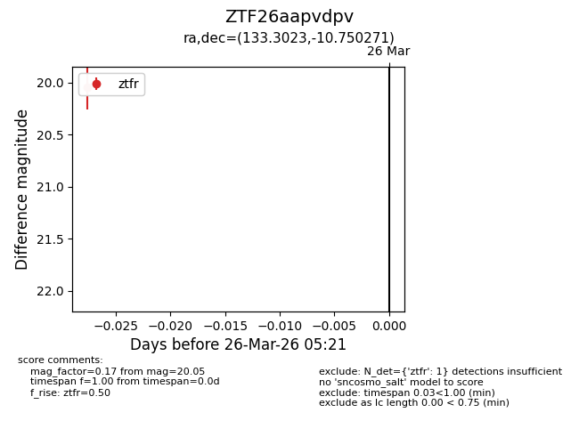
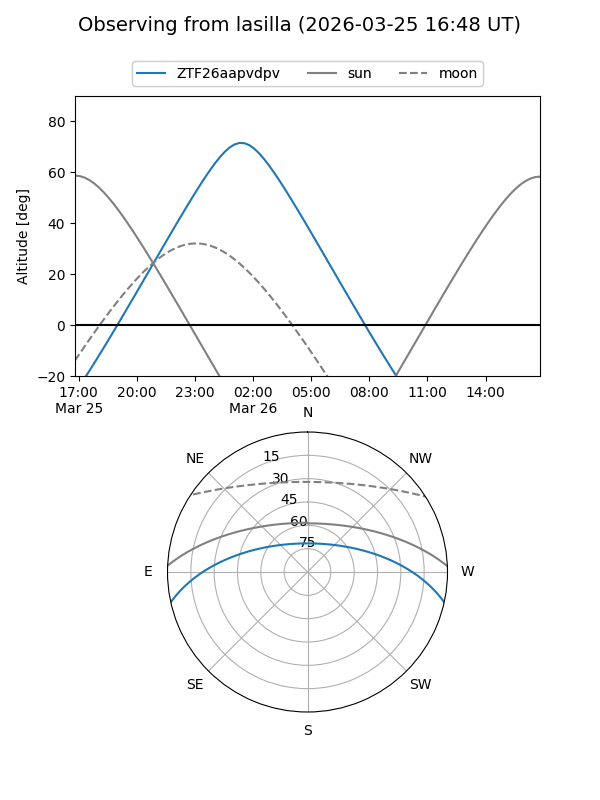
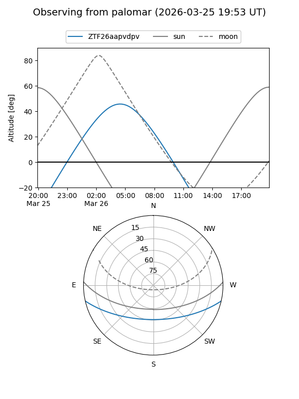

ZTF26aapvdpv
Target ZTF26aapvdpv at 2026-03-26 05:23
Aliases and brokers:
FINK: link
Lasair: link
ALeRCE: link
alt names
ZTF26aapvdpv (ztf,fink_ztf)
Coordinates:
equatorial (ra, dec) = 133.3023,-10.75027
equatorial (HMS+DMS) = 08:53:12.55,-10:45:00.98
galactic (l, b) = (237.8221,+20.97552)
Flags:
Photometry:
last ztfr=20.05
1 ztfr detections
Lightcurve

Visibility


Additional plots